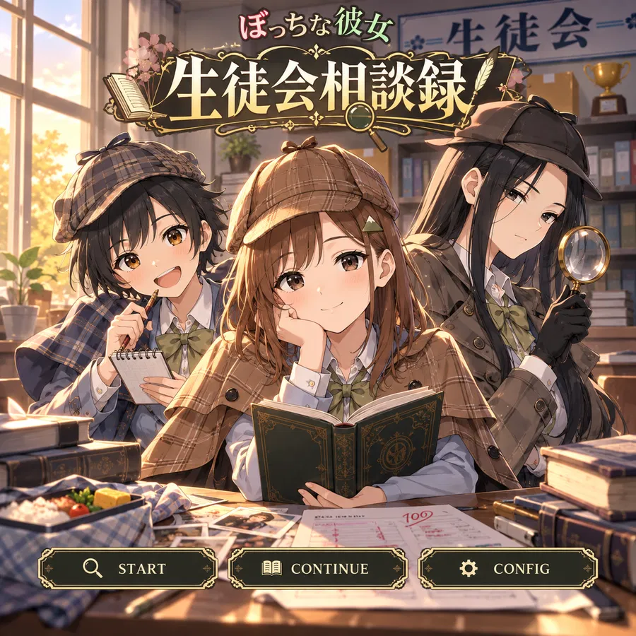

SOUND ENABLECLICK TO BEGINクリック後、メニューにカーソルを合わせると音が鳴ります

HOW TO PLAY
遊び方
会話欄をクリック／タップすると次の台詞へ進みます。
気になる場所や人物を選び、情報と証拠を集めます。
集めた証拠をいつでも確認できます。最終推理では必要な証拠を選びます。
手動セーブとオートセーブから再開できます。
AUTOで自動送り。SKIPは既読台詞だけ高速送りし、未読で自動停止。VOICEで現在の台詞を再生できます。
誤った推理では★が減ります。解決済み後はBEST評価が記録されます。
CONFIG
設定
受付済
相談記録 No.01
件名消える弁当
相談内容
昼休みになると、弁当のおかずが一品だけ消えている。
担当候補：水城すず分類：校内調査
受付済
相談記録 No.02
件名100点になる課題
相談内容
間違えたはずの課題が、返却されるたび100点になる。
担当候補：九条玲分類：原因不明
受付済
相談記録 No.03
件名戻ってくる本
相談内容
焼却物置き場へ出した古い本が、二度も本棚へ戻った。
担当候補：大山こはる分類：図書室
九条が机の上へ三枚の相談票を並べた。
FILE 01
消える弁当
依頼人 小宮山紗季
RECAP
生徒会相談録
再開地点
ここから再開します。
CASE SELECT
どの相談から調べる？
◆
クリックで戻る
END
企画式守伊之助
シナリオ式守伊之助
キャラクターデザイン式守伊之助
イラストChatGPT
音声制作ElevenLabs
使用ツールChatGPT・Suno・ElevenLabs
制作式守伊之助
解決済
FILE 01
EVIDENCE ACQUIRED
証拠を入手
INVESTIGATION
1年教室を調べる
0 / 3
気になる場所・証言を選んで調査する。
調査項目を選んでください。
INTERVIEW
容疑者候補に話を聞く
0 / 2
順番は自由。二人の証言を確かめる。
話を聞く相手を選んでください。
EVIDENCE
証拠・重要情報
FINAL DEDUCTION
真相を説明する4枚を選ぶ
必要な情報カードは4枚。選択は一度だけ。
0 / 4
SAVE DATA
セーブ／ロード
ARCHIVE
会話ログ
0件